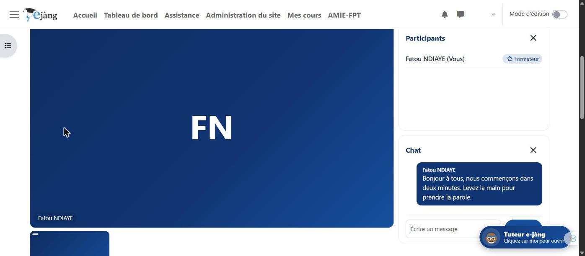
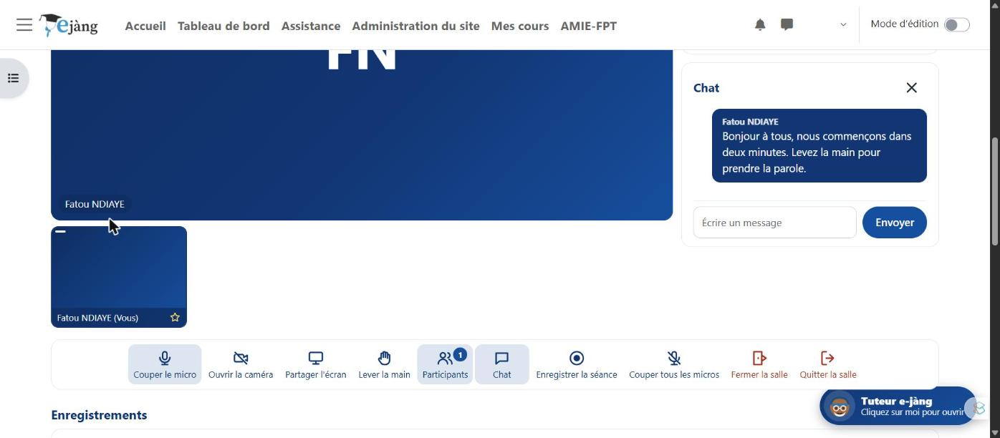
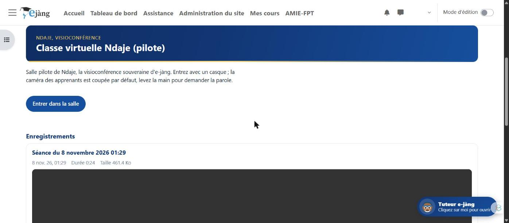

Le problème
La plateforme proposait deux outils de classe virtuelle, tous deux empruntés. Le premier reposait sur le serveur de démonstration d'un éditeur, bridé et annoncé en fin de vie. Le second coupait toute réunion au bout de cinq minutes tant qu'un abonnement n'était pas souscrit. L'alternative, héberger soi-même un serveur de visioconférence, exige une machine dédiée dont le coût et l'exploitation étaient hors de portée.
La demande de la direction tenait en une phrase : nous dépendons de ressources propriétaires que nous n'avons pas les moyens de payer, il nous faut une solution souveraine qui permette aux formateurs de faire leurs visioconférences dans leurs cours sans se tracasser.
Le principe retenu
Un navigateur moderne sait déjà tout faire : capter la caméra et le micro, partager l'écran, parler à un autre navigateur en direct et enregistrer une vidéo. Ce qui manque d'ordinaire, c'est un point de rendez-vous pour que les navigateurs se trouvent ainsi qu'un lieu où conserver les enregistrements. La plateforme fournit les deux.
Les flux audio et vidéo circulent directement de navigateur à navigateur, chiffrés par construction, sans jamais transiter par le serveur de la plateforme, qui ne porte donc aucune charge média. L'enregistrement est produit sur le poste du formateur et déposé au fil de l'eau dans les fichiers de son cours, par morceaux de dix secondes : une coupure n'emporte pas ce qui a déjà été déposé.
Aucun composant n'est à installer sur le serveur, aucun port à ouvrir, aucun contrat à signer. Sur le réseau local d'un établissement, la salle fonctionne même sans accès à Internet.
Ce qu'il est, ce qu'il n'est pas
Ndaje est la classe virtuelle sans infrastructure : réunions de formateurs, accompagnement des référents, séances d'inspection, pilotage, petits groupes d'apprenants équipés. Il ne vise pas les classes de trente à cent apprenants, que seul un serveur de diffusion peut servir. Il est la réponse à l'absence de serveur, pas le choix d'un serveur.
La salle, telle que la voit le formateur


Le formateur ajoute l'activité dans son cours en trois champs, ouvre la salle d'un clic et conduit sa séance avec les gestes attendus : micro, caméra, partage d'écran, mains levées, chat, coupure générale des micros, autorisation d'une caméra, sortie d'un participant, enregistrement, fermeture. Par défaut, les apprenants entrent caméra coupée et micro fermé : c'est le mode classe, qui économise la connexion de tous.
Les enregistrements restent dans le cours

Chaque enregistrement apparaît sous la salle, avec sa date, sa durée et son poids ; il se lit sans rien installer. Le formateur le renomme ou le supprime ; les apprenants le revoient. La séance enregistrée pèse environ quatre mégaoctets par minute en qualité basse, ce qui a été choisi comme réglage par défaut.
Ce qu'il faut dire plutôt que cacher
| Limite | Pourquoi | Ce qui est fait |
|---|---|---|
| Six à douze participants confortables | chaque participant envoie son flux à chacun des autres | mode classe par défaut, plafond réglable, avertissement au-delà |
| Certains réseaux mobiles empêchent la liaison directe | c'est la contrepartie de l'absence de serveur relais | message explicite, le chat reste disponible ; un relais TURN règle ce cas au prix d'une machine à administrer et d'une bande passante à financer, pas d'un simple réglage |
| L'enregistrement dépend du poste du formateur | c'est lui qui le produit | dépôt au fil de l'eau, consolidation automatique de ce qui a été reçu en cas de coupure |
Ces limites sont écrites dans le guide du formateur et dans la fiche projetée aux apprenants. Un outil souverain se juge aussi à l'honnêteté de sa documentation.
La trajectoire
Le jour où l'État met une machine à disposition, la suite est connue : un relais TURN pour les réseaux difficiles, puis un serveur de diffusion libre et éprouvé (Jitsi ou Galène, en SFU) pour les grands groupes. Jitsi auto-hébergé avait été examiné dès le départ ; il a été écarté non pour sa qualité mais parce qu'il suppose un serveur et un administrateur qui n'existaient pas. Ndaje resterait alors l'outil des petits groupes et des établissements sans accès extérieur. La souveraineté ne tient pas à l'absence de serveur mais à la maîtrise de celui qu'on utilise.
Comment il a été construit
En trois sprints, avec une équipe multidisciplinaire : un cadrage qui fixe d'abord le contrat d'interfaces entre les lots, puis trois lots construits en parallèle (le dos de la plateforme, la façade de la salle, l'ingénierie pédagogique et ses guides), puis l'intégration, la recette et la revue de sécurité.
Une maquette qui parle toute seule
Avant toute intégration, la façade de la salle a été éprouvée dans une maquette autonome où deux onglets d'un même navigateur se connectent réellement entre eux, sans plateforme. Deux défauts de liaison y ont été trouvés et corrigés avant qu'aucune ligne ne touche la plateforme.
Une revue de sécurité adversariale
La revue a cherché ce que la recette fonctionnelle ne voit pas : ce qu'un participant inscrit mais malveillant pourrait faire depuis sa console. Elle a trouvé un défaut bloquant, l'absence de limite au volume des échanges techniques, puis trois défauts importants. Tous ont été corrigés et contredits par des témoins négatifs avant la mise en service.
Ce que ce travail ne montre pas
Aucun code source, aucun paquet, aucun nom réel. Les captures sont prises sur la plateforme elle-même, dans une salle d'essai ; le nom de la personne affichée est fictif. Le code porte la structure d'un système d'information public et n'a pas vocation à circuler. Aucun chiffre d'usage de la plateforme n'est publié ici. Les éléments de recette et de revue de sécurité cités sur cette page ne sont donc pas vérifiables publiquement : ils sont communicables à toute instance de l'État qui le demande.
Ce qui est présenté est le principe : une plateforme d'apprentissage peut porter sa propre visioconférence sans dépendre d'un éditeur, dès lors qu'elle se contente d'être le point de rendez-vous des navigateurs et le coffre des enregistrements. Il vaut pour toute plateforme Moodle.